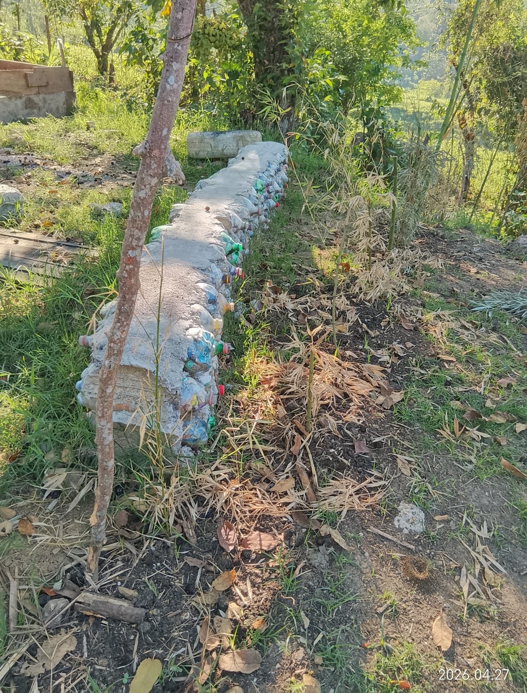
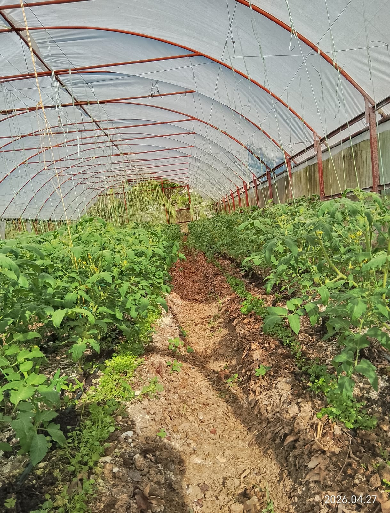

La carrera de Técnico en Desarrollo Comunitario está enfocada en la formación de estudiantes comprometidos con el bienestar social. Su objetivo es preparar jóvenes capaces de identificar problemáticas en su entorno y proponer soluciones que impulsen el desarrollo de su comunidad.
El egresado puede colaborar con instituciones públicas, organizaciones sociales, programas comunitarios o emprender iniciativas propias, promoviendo el bienestar, la inclusión y el desarrollo social.
Volver al inicio